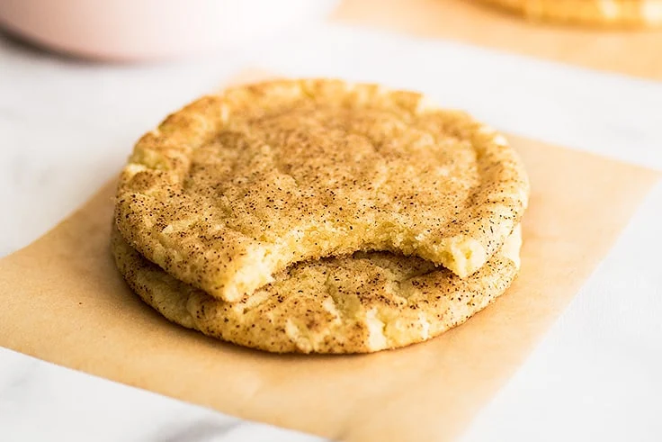

Home
Sugar/Cinnamon Sugar Cookies

Description
Small batch, thin and chewy, sugar or cinnamon sugar cookies with crispy edges.
Yields 6 cookies
Ingredients
- 76g (1/3 cup) salted butter
- 80g (1/3 cup + 1 tbsp) sugar
- 1 large egg yolk
- 1/4 tsp vanilla extract
- 98g (3/4 cup + 1 tbsp) flour
- 1/4 tsp baking soda
- 1/8 tsp salt
- Extra sugar and/or cinnamon for rolling
Steps
- Preheat oven to 350, and line a baking sheet with parchment paper or foil.
- Combine softened or melted butter and sugar and beat until light and fluffy, 30 seconds to 1 minute.
- Add yolk and vanilla, and beat until combined.
- Add flour, baking soda, and salt, and beat until dough comes together and starts to clump.
- Divide dough into 6 balls.
- Roll dough balls in sugar or cinnamon sugar and transfer them to the baking sheet.
- Use a flat bottomed glass to flatten each cookie to around 1/2" thick (for fluffier cookies skip this step).
- Bake for 9-12 minutes or until the bottom edges of the cookies are barely golden.
- Let cool still on sheet and enjoy!